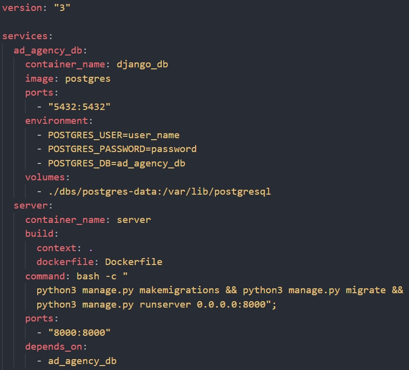
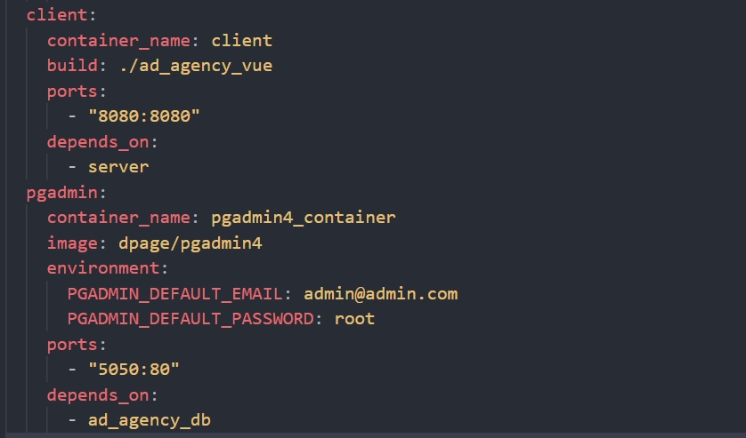
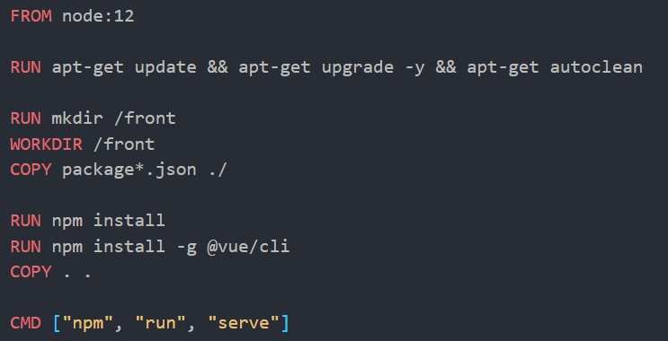
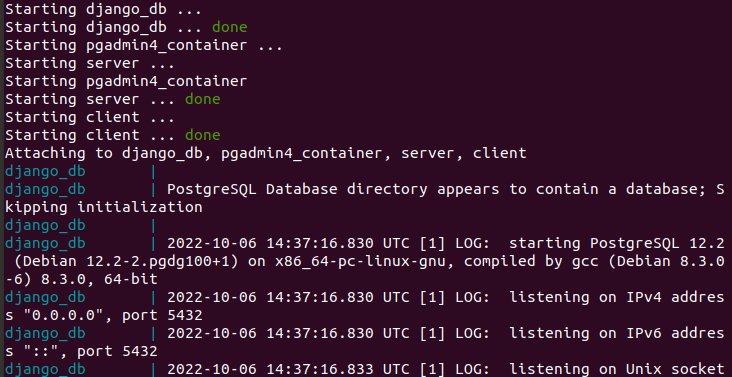
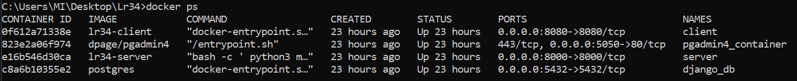
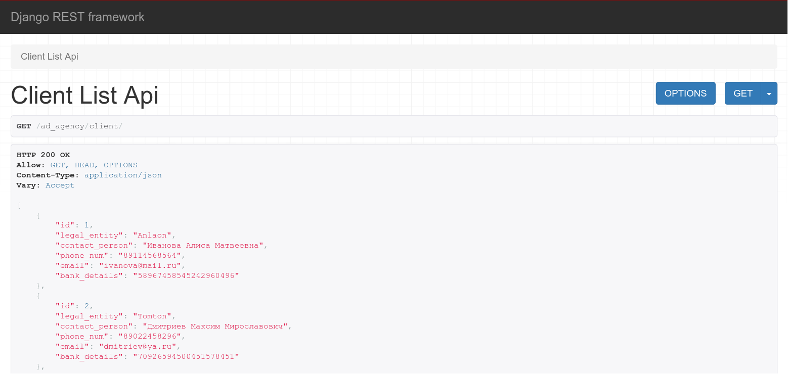
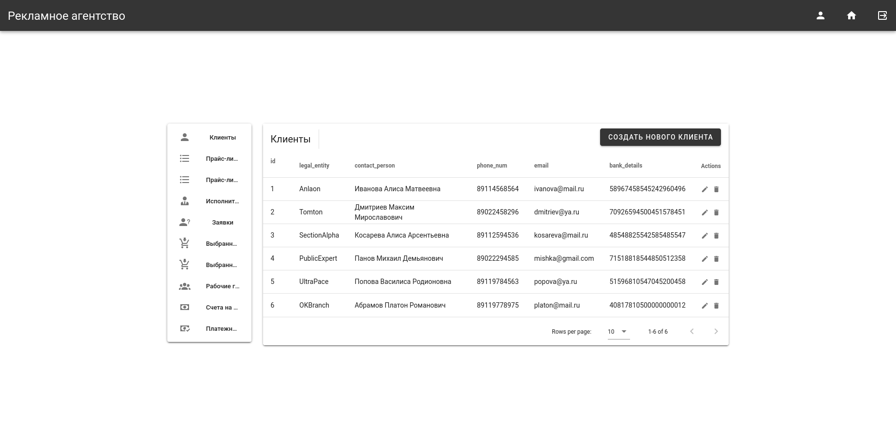
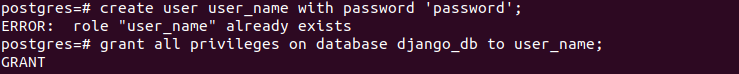
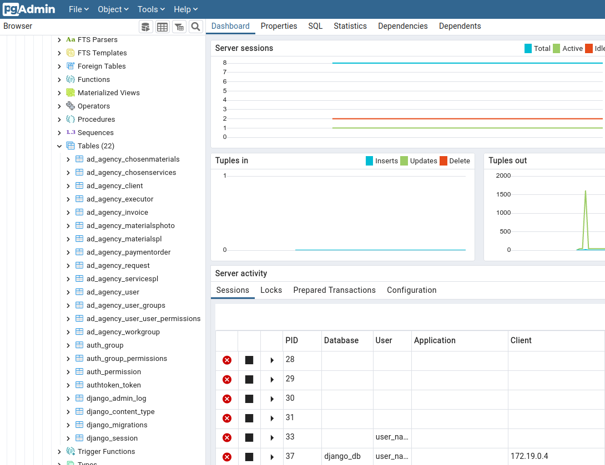

2. Оркестрация средствами Docker-compose.
docker-compose.yml
Для оркестрации создается файл docker-compose.yml, в котором описана работа 4 сервисов.  
Dockerfile для запуска клиентской части проекта
Создается аналогичным докерфайлу для бэкенд части. Дополнительно устанавливается компонент слайдера для навигационной панели. 
Запуск
Запуск производится через терминал с помощью команды docker-compose up.  
Результаты
Серверная часть 
Клиентская часть 
Добавление нового пользователя через терминал 
Подключение созданного пользователя 